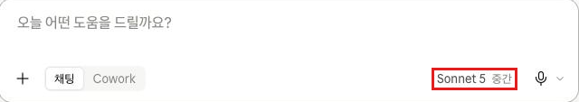
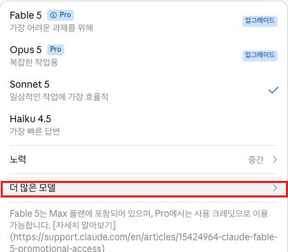
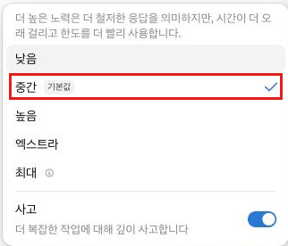
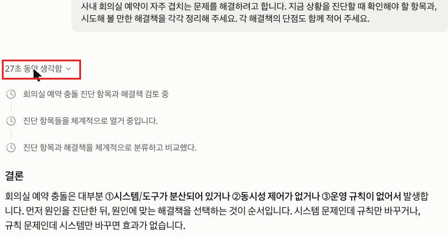

Claude · 초급 · 모듈 04
지금 어떤 모델과 대화 중인지 확인하고, 노력(effort) 수준과 확장 사고를 바꿔 가며 같은 질문에 대한 응답이 어떻게 달라지는지 직접 비교합니다.
이 모듈을 마치면 다음을 할 수 있습니다.
| 항목 | 내용 |
|---|---|
| 필요 플랜 | 없음. 다만 Free 계정은 선택지가 적어, 비교 실습에서 바꿀 수 있는 항목이 제한될 수 있습니다. |
| 설치 | 불필요. 웹 브라우저만 있으면 됩니다. |
| 사전 지식 | 모듈 03 수료. 특히 모듈 01의 사용량 한도 개념을 알고 있어야 합니다. |
| 준비물 | 응답 시간을 재기 위한 스톱워치(휴대폰 기본 앱이면 충분합니다). |
| 예상 사용량 | 프롬프트 3회. 이 중 2회는 의도적으로 높은 노력 수준으로 실행하므로 평소보다 사용량을 많이 씁니다. 사용량이 얼마 남지 않았다면 세션이 초기화된 뒤에 진행하세요. |
이 문서는 화면 속 위치를 기준으로 설명합니다. 한국어 표기가 공식 문서로 확인된 경우에만 따옴표로 인용했고, 확인되지 않은 것은 공식 자료 미확인으로 남겨 두었습니다.
| 이 문서에서 부르는 이름 | 확인 상태 |
|---|---|
| 모델 메뉴 (전송 버튼 옆) | 확인됨 (출처: support.claude.com/ko/articles/8664678, 2026-08-20 확인) |
| "더 많은 모델" | 확인됨 (출처: support.claude.com/ko/articles/8664678, 2026-08-20 확인) |
| "노력" (effort) | 확인됨 (출처: support.claude.com/ko/articles/8664678, 2026-08-20 확인) |
| "사고" 토글 / "확장" 토글 | 확인됨 (출처: support.claude.com/ko/articles/8664678, 2026-08-20 확인) |
| 응답 위 "OO초 동안 생각함" 형태의 접이식 사고 요약 섹션 | 확인됨 (출처: 화면 직접 확인, 2026-08-26) |
| 노력 선택이 제공되는 모델 목록 | 공식 자료 미확인 — 4-5 참조 |
전송 버튼 옆의 모델 메뉴 하나가 세 가지를 제어합니다. 어떤 모델과 대화할지, 각 응답에 얼마나 노력을 들일지, 확장 사고를 쓸지. 셋 다 대화 도중 언제든 바꿀 수 있고, 변경 사항은 다음 응답부터 적용됩니다. (출처: support.claude.com/ko/articles/8664678, 2026-08-20 확인)
| 설정 | 무엇을 정하는가 | 바꾸면 달라지는 것 |
|---|---|---|
| 모델 | 어떤 Claude 모델과 대화할지 | 응답의 성격과 속도, 그리고 사용량 소모 속도 |
| 노력 (effort) | 모든 응답에 Claude가 얼마나 철저하게 임할지 | 높을수록 더 충실하지만 느리고 사용량을 더 씁니다 |
| 확장 사고 | 답하기 전에 별도 섹션에서 추론 과정을 펼칠지 | 켜면 응답 위에 "OO초 동안 생각함" 형태의 접이식 섹션이 생깁니다(고정된 "사고"라는 이름표가 붙는 것은 아닙니다) |
노력과 사고는 별개 설정이며 조합해서 쓸 수 있습니다. 노력은 "모든 응답의 철저함"을, 사고 토글은 "추론 과정을 펼쳐 보일지"를 정합니다. (출처: support.claude.com/ko/articles/8664678, 2026-08-20 확인)
메뉴에는 각 모델의 권장 수준이 "기본값"으로 표시됩니다. 공식 안내는 이렇게 정리합니다.
| 화면 표시 | 공식 설명 |
|---|---|
| 낮음 | 일상적인 작업에 적합하며 사용량을 더 늘려 줍니다(적게 소모). |
| 중간 | |
| 높음 | 품질과 속도의 최고 균형을 제공합니다. |
| 엑스트라 | 장시간 실행되는 코딩·에이전트 작업용. 최대만큼의 토큰 비용 없이 더 깊은 추론을 제공합니다. |
| 최대 | 가장 철저한 옵션. 가장 깊은 추론이 필요한 작업에 적합합니다. |
간단한 질문·기본 정보 요청·일반 작성에는 추가 노력이나 사고가 필요하지 않습니다. 수학 계산과 증명, 포괄적인 프로젝트 계획, 상세한 문서 분석, 다단계 기술 문제에서 이런 설정이 가장 도움이 됩니다. (출처: support.claude.com/ko/articles/8664678, 2026-08-20 확인)
Help Center 문서는 이 단계를 "xhigh"로 표기하지만, 2026-08-27 기준 실제 화면(C-03 참고)에는 "엑스트라"로 표시됩니다. 같은 단계를 가리키는 다른 이름이니 화면에서 이 단계를 찾을 때는 "엑스트라"를 보면 됩니다. (출처: 화면 직접 확인, 2026-08-27)
노력이 높을수록 응답이 철저해지지만 시간이 더 걸리고 토큰을 더 많이 써서, 모듈 01에서 배운 사용량 한도에 더 빨리 도달합니다. 일상 업무에는 기본값으로 두고, 정말 필요한 작업에서만 올리는 편이 효율적입니다. (출처: support.claude.com/ko/articles/8664678, 2026-08-20 확인)
모델 목록은 자주 바뀝니다. 확인 기준일 시점에 제품 요금제 페이지가 안내하는 현행 모델과 Help Center 문서가 노력 선택 가능 모델로 열거한 목록이 서로 다른 세대를 가리키고 있었습니다. 어느 쪽이 최신인지 공식 자료만으로는 확정할 수 없어, 이 문서는 특정 모델명을 쓰지 않고 공식 자료 미확인으로 남깁니다.
실습에는 지장이 없습니다. 화면에 실제로 표시된 이름을 그대로 읽고 쓰면 됩니다. 모델별 성능 비교와 선택 기준은 상급 트랙에서 다룹니다.
만들 결과물: 같은 질문을 기본 설정과 조절 설정으로 각각 실행해 응답 분량·소요 시간을 기록한 비교표 1개.
새 대화를 열고 전송 버튼 옆을 봅니다. 선택된 모델 이름과 노력 수준이 거기에 표시됩니다. 모바일 앱에서는 화면 상단에 나옵니다. 화면에 보이는 이름을 메모해 두세요.

표시된 모델 이름을 클릭하면 선택 가능한 모델 목록이 열립니다. "더 많은 모델"이 보이면 클릭해 추가 옵션까지 확인합니다. 지금은 바꾸지 말고 목록만 확인합니다.

설정을 바꾸지 않은 상태에서 아래 프롬프트를 붙여 넣고, 스톱워치를 켠 뒤 "제출" 버튼을 클릭합니다. 응답이 끝나면 스톱워치를 멈추고 시간을 적어 둡니다.
사내 회의실 예약이 자주 겹치는 문제를 해결하려고 합니다.
지금 상황을 진단할 때 확인해야 할 항목과, 시도해 볼 만한 해결책을
각각 정리해 주세요. 각 해결책의 단점도 함께 적어 주세요.전송 버튼 옆의 모델 이름을 클릭하고 "노력"을 클릭한 뒤, 지금보다 한 단계 높은 수준을 선택합니다. 이 메뉴가 보이지 않는다면 4-5에서 설명한 대로 현재 모델이 노력 선택을 지원하지 않는 것이므로, 이 단계만 건너뛰고 곧바로 5단계(확장 사고 켜기)로 이동해 나머지 실습을 그대로 진행합니다. 확장 사고만 켜도 비교 실습은 성립합니다.

같은 메뉴에서 "노력" 위에 마우스를 올리면 "사고" 토글이 나타납니다. 이를 켭니다. 노력 수준이 없는 모델이라면 대신 "확장" 토글을 켜면 됩니다.
같은 대화에서 아래 프롬프트를 붙여 넣고, 다시 스톱워치를 켠 뒤 "제출" 버튼을 클릭합니다. 3단계와 똑같은 질문을 다른 설정으로 실행하는 것입니다.
같은 질문을 다시 하겠습니다. 사내 회의실 예약이 자주 겹치는 문제를
해결하려고 합니다. 지금 상황을 진단할 때 확인해야 할 항목과,
시도해 볼 만한 해결책을 각각 정리해 주세요.
각 해결책의 단점도 함께 적어 주세요.응답 위에 "OO초 동안 생각함" 형태의 문구가 나타났다면(정확한 초 단위는 매번 다릅니다) 클릭해 펼쳐 봅니다. Claude가 어떤 순서로 문제에 접근했는지 요약이 나옵니다. 답이 왜 그렇게 나왔는지 확인할 때 유용합니다. 노력 수준이 낮으면 질문이 간단할 때 이 섹션이 아예 나타나지 않을 수 있습니다 — 나타나지 않으면 노력 수준을 한 단계 더 올려 다시 시도하세요.

같은 대화에서 아래 프롬프트를 보냅니다. 대괄호 안에는 직접 잰 시간을 적으세요. 이 응답이 이 모듈의 결과물입니다.
이 대화에서 같은 질문을 두 번 했습니다.
첫 응답은 [○○초] 걸렸고, 두 번째 응답은 [○○초] 걸렸습니다.
두 응답을 비교해 아래 항목을 표로 정리해 주세요.
- 분량(대략 몇 문단인지)
- 다룬 항목 수
- 내용의 깊이 차이
- 소요 시간
그리고 어떤 종류의 업무에 어느 설정이 알맞을지 두 줄로 조언해 주세요.모델 메뉴를 다시 열어 노력 수준을 "기본값"으로 표시된 항목으로 되돌리고, 확장 사고 토글도 끕니다. 일상 업무에서는 기본값이 가장 효율적이므로, 실습이 끝나면 되돌리는 습관을 들이세요.
아래 "예상 출력"은 응답 예시입니다. 성공 여부는 문구가 아니라 결과물의 형태와 항목이 요청대로 나왔는지로 판단합니다. 두 응답의 차이가 크지 않을 수도 있는데, 그것도 정상적인 관찰 결과입니다.
사전 준비물: 로그인한 Claude 계정, 새 대화 1개, 설정을 바꾸지 않은 상태, 스톱워치.
사내 회의실 예약이 자주 겹치는 문제를 해결하려고 합니다.
지금 상황을 진단할 때 확인해야 할 항목과, 시도해 볼 만한 해결책을
각각 정리해 주세요. 각 해결책의 단점도 함께 적어 주세요.예상 출력(응답 예시): 확인 항목 목록과 해결책 목록이 나오고, 각 해결책에 단점이 붙습니다.
성공 확인 방법: 응답이 도착했고 소요 시간을 기록했다면 성공입니다. 이 응답이 비교의 기준선입니다.
사전 준비물: 프롬프트 A를 보낸 같은 대화, 노력 수준을 한 단계 올리고 확장 사고를 켠 상태, 스톱워치.
같은 질문을 다시 하겠습니다. 사내 회의실 예약이 자주 겹치는 문제를
해결하려고 합니다. 지금 상황을 진단할 때 확인해야 할 항목과,
시도해 볼 만한 해결책을 각각 정리해 주세요.
각 해결책의 단점도 함께 적어 주세요.예상 출력(응답 예시): 같은 구조의 답이 나오되, 응답 위에 "OO초 동안 생각함" 형태의 접이식 섹션이 함께 생깁니다.
성공 확인 방법: 아래 2가지로 확인합니다.
사전 준비물: 프롬프트 A·B를 모두 보낸 같은 대화, 기록해 둔 소요 시간 2개.
이 대화에서 같은 질문을 두 번 했습니다.
첫 응답은 [○○초] 걸렸고, 두 번째 응답은 [○○초] 걸렸습니다.
두 응답을 비교해 아래 항목을 표로 정리해 주세요.
- 분량(대략 몇 문단인지)
- 다룬 항목 수
- 내용의 깊이 차이
- 소요 시간
그리고 어떤 종류의 업무에 어느 설정이 알맞을지 두 줄로 조언해 주세요.예상 출력(응답 예시): 네 항목이 담긴 비교표와 두 줄짜리 조언이 나옵니다.
성공 확인 방법: 표와 조언이 실제로 나왔다면 성공입니다. 이 응답이 이 모듈의 완결 결과물입니다.
| 증상 | 원인 | 해결 |
|---|---|---|
| 모델 메뉴에 "노력" 항목이 없다 | 현재 모델이 노력 선택을 지원하지 않음 | 노력 선택은 일부 모델에서만 제공됩니다. 대신 "확장" 토글이 있는지 확인하고, 그것으로 확장 사고만 켜서 실습하세요. |
| 기대하던 모델이나 노력 수준이 목록에 없다 | 플랜 제한 또는 Enterprise 관리자 설정 | Free는 선택지가 적습니다. Enterprise를 쓰고 있다면 관리자가 해당 역할에 대해 비활성화했을 수 있으니 관리자에게 문의하세요. |
| 설정을 바꿨는데 응답이 그대로다 | 변경은 다음 응답부터 적용됨 | 설정을 바꾼 뒤 새 메시지를 보내야 반영됩니다. 이미 나온 응답은 바뀌지 않습니다. |
| 사고 과정이 중간에 끊겼다는 안내가 나온다 | 안전 시스템이 사고 내용의 일부를 표시하지 않음 | Claude의 사고에 오용 위험이 있다고 판단된 정보가 포함될 때 발생합니다. 답변에 지장이 있으면 프롬프트를 다르게 표현해 다시 물어보세요. |
| 실습 도중 사용량 한도에 도달했다 | 높은 노력 수준이 토큰을 많이 소모함 | 세션이 초기화될 때까지 기다린 뒤 이어서 진행합니다. 다음부터는 노력을 올리기 전에 남은 사용량을 확인하세요. |
모듈 05로 넘어가기 전에 스스로 확인하세요.
이 모듈에는 캡처 4장이 필요합니다. C-01·C-02·C-03은 2026-08-27, C-04는 2026-08-26에 각각 실제 화면으로 촬영했습니다. 네 장 모두 실촬영이며 목업으로 대체한 캡처는 없습니다.
| 번호 | 화면 | 진입 경로 | 캡처 범위 | 강조 표시 | 캡션 |
|---|---|---|---|---|---|
| C-01 | 전송 버튼 옆 모델·노력 표시 | 새 대화를 연 직후 | 입력창 하단과 전송 버튼 주변 | 모델 이름과 노력 수준 | 현재 모델과 노력 수준은 전송 버튼 옆에 표시된다. |
| C-02 | 열린 모델 메뉴 | 모델 이름 클릭 | 메뉴 전체 | "더 많은 모델" 항목 | 모델 메뉴. 이 메뉴가 모델·노력·사고를 제어한다. |
| C-03 | "노력" 수준 선택 메뉴 | 모델 이름 클릭 → "노력" 클릭 | 노력 수준 목록 전체 | "기본값" 표시 항목 | 노력 수준 선택 메뉴. 권장값이 "기본값"으로 표시된다. |
| C-04 | 펼쳐진 "OO초 동안 생각함" 섹션 | 응답 위의 문구 클릭 | 사고 요약 섹션과 응답 앞부분 | "OO초 동안 생각함" 제목 | 확장 사고를 켜면 응답 위에 "OO초 동안 생각함" 형태의 접이식 섹션이 생긴다. |
C-01·C-02·C-03에 실제 모델명과 노력 수준 목록이 찍힙니다. 이를 근거로 3-2 표의 공식 자료 미확인 항목을 확정하고, 필요하면 4-5의 설명을 실제 화면 기준으로 갱신하세요. 다만 모델 목록은 자주 바뀌므로, 본문에 모델명을 직접 적기보다 캡처로만 남기는 편을 권합니다.
https://support.claude.com/ko/articles/8664678-모델-노력-사고-설정-변경 2026-08-20 확인 (문서 갱신 2026-07-01)https://claude.com/pricing 2026-08-20 확인화면 속 명칭과 설정 동작은 한국어 지원 센터 전용 문서로 확인했습니다. 모델 목록은 요금제 페이지와 Help Center 문서가 서로 다른 세대를 가리키고 있어, 어느 쪽도 단정하지 않고 공식 자료 미확인으로 남겼습니다(4-5 참조).